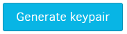

Introduction to Friendbot
Kin is valuable to users because it allows them to earn, spend and manage Kin. Because Kin is a currency, testing your Kin integration poses a challenge: how do you test without spending a wallet-full of money putting Kin into test accounts? The answer is Friendbot, a service available on the Kin test environment.
You can think of Friendbot as a wealthy friend who's willing to give you small batches of Kin while you test your integration. Here's how it works:
Create and fund a new account
Kin SDKs provide classes and methods that allow you to create test accounts and fund them with Kin using Friendbot. The classes abstract the details, so this tutorial uses cURL to see what goes on behind the scene.
Generate keypair
Every account on the Kin Blockchain has an associated keypair, including a private key used to sign documents and a public address used to uniquely identify the account on the blockchain.
The online Kin laboratory includes a tool that generates valid keypairs for the Kin Blockchain. Please note that it currently only supports Kin blockchain's testnet.
Go to the laboratory and click Generate keypair. Copy the public key.

Create account
Next create an account on the blockchain using the public key as the public address.
From a console, use cURL or other tool to send the following request to the Kin infrastructure Friendbot endpoint:
curl http://friendbot-testnet.kininfrastructure.com?addr=<pubic address>
If successful, Friendbot will return a JSON message that looks something like this:
{
"_links": {
"transaction": {
"href": "https://horizon-testnet.kininfrastructure.com/transactions/c1578edef2f6ac3c6e72134b5ea226c6391aef629d14fe8bee26e80016fc5249"
}
},
...
}
The string after .../transactions/ is the hash of the Blockchain transaction that created the account.
If you have already created an account with the same address, you'll get a message with the following explanation:
"operations": [
"op_already_exists"
]
Inspect account
We can check to be sure the new account automatically received Kin by sending the following request to the Horizon server endpoint. Note this is a different endpoint than used to create and fund the account.
curl http://horizon-testnet.kininfrastructure.com/accounts/<public address>
Notice the public address is returned as is the balance of 10,000 KIN.
"account_id": "<public address>",
...
"balances": [
{
"balance": "10000.0000000",
"buying_liabilities": "0.0000000",
"selling_liabilities": "0.0000000",
"asset_type": "native"
}
],
...
With a fully funded account on the Kin Blockchain test environment you can debug and optimize the integration of Kin into your service.